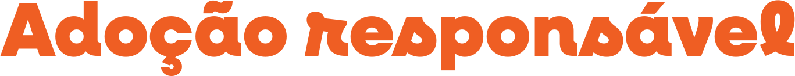
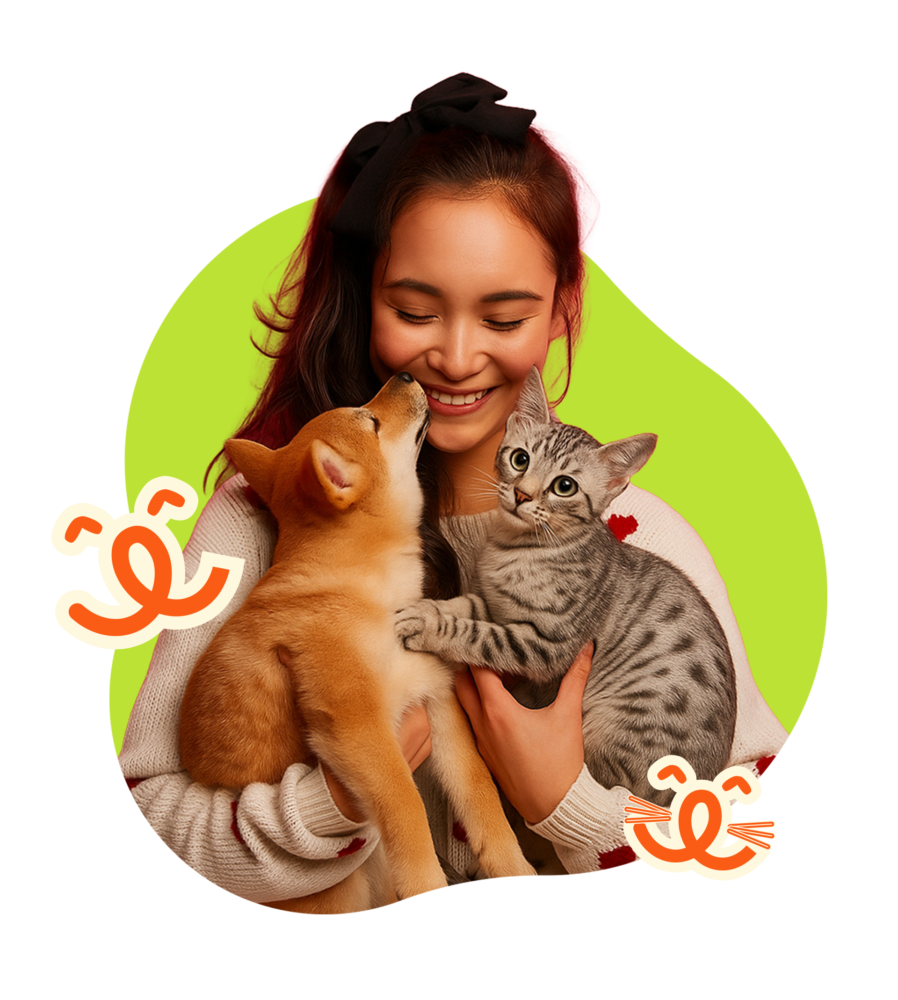

Adotar um animal é muito mais do que oferecer um lar: é assumir um compromisso de amor, cuidado e respeito. Cada bichinho adotado carrega uma história de espera e esperança, e quando encontra uma família disposta a cuidar com dedicação, ganha uma segunda chance de vida.
A adoção responsável significa entender que um pet precisa de atenção, alimentação, cuidados veterinários e, acima de tudo, carinho todos os dias. É sobre reconhecer que eles não são objetos, mas vidas que sentem, amam e confiam em nós.